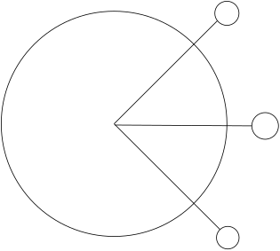

| tags:[ p5 ]
p5js tutoriál - Uklízecí roboti
Pro tento tutoriál si potřebujete otevřít dvě stránky:
Náš ultimátní cíl bude nasimulovat uklízací roboty, kteří jezdí po místnosti. Asi nějak takhle:
Základy
O co jde?
p5 je knihovna, ve které se dají jednoduše vytvářet vizualizace. Je postavená na Javascriptu, takže se dá spustit v prohlížeči (není potřeba nic instalovat). Navíc má i online editor!
Do editoru se dá přihlásit, aby se dali uložit rozdělané projekty. Po otevření editoru uvidíte:
function setup() { // <- spustí se jednou
createCanvas(400, 400); // vytvoří oblast pro vykreslování o velikosti 400x400 pixelů
}
function draw() { // <- spustí se cca 25x za sekundu
background(220); // vybarví pozadí světle šedou (hodnoty od 0 do 255)
}
Pokud tento kód spustíte, tak se na pravé straně objeví šedý čtverec – což je plátno, do kterého budeme kreslit různé věci.
První kontakt
Do funkce draw přidejte:
ellipse(mouseX,mouseY,40,40); // vykreslí kruh s průměrem 40 na pozici myši
Funkce background překresluje pozadí pokaždé. Zkuste co se stane, pokud překreslíme pozadí pouze jednou, při startu programu. Přesuňte volání background do funkce setup.
Udělejme z tohoto příkladu “kreslítko” – pokud budeme držet myš, tak budeme kreslit bílou na černé pozadí. Pro to bude stačit vykreslit kruh pouze, pokud držíme myšítko, což zjistíme z proměnné mouseIsPressed.
if(mouseIsPressed){
ellipse(mouseX,mouseY,40,40);
}
Ještě nastavit černou barvu pozadí a bílou barvu kruhu. Pozadí změníme pouhou změnou hodnoty background(0). Ovšem pro kruh potřebujeme nastavit barvy obvodu a výplně:
fill(0);
noStroke();
Výsledný kód, který kreslí bílou na černé pozadí:
function setup() {
createCanvas(400, 400);
background(0);
}
function draw() {
fill(255);
noStroke();
if(mouseIsPressed){
ellipse(mouseX,mouseY,40,40);
}
}
Upravte kód tak, abychom měli čtverec jako štětec místo kruhu. (Tvary lze najít v dokumentaci ↗)
Práce s kruhy
Připomeňme si prvně několik věcí o kruzích a geometrii. Trochu atypicky bude v našem případě osa Y směrem “dolů”.

Náš robot bude kruh, který má střed na souřadnicích (x,y), a pohybuje se rychlostí d ve směru r. Z trigoniometrie (o úhlech a trojúhelnících) plyne, že můžeme spočíst dx a dy následovně:
var dx = d*cos(r);
var dy = d*sin(r);
Potom jen tuto změnu pozice přičteme v každém kroku k pozici kruhu. A kruh se nám tak začne pohybovat.
x+=dx;
y+=dy;
r+=0.1;
Dostaneme tak kruh, který jezdí po ploše, a je možné ovládat jeho rychlost i zatočení.
function setup() {
createCanvas(400, 400);
background(0);
}
var x=50,y=50,r=0,d=1,rd=0.02;
function draw() {
fill(255);
noStroke();
r+=rd;
var dx=d*cos(r);
var dy=d*sin(r);
x+=dx;
y+=dy;
ellipse(x,y,20,20);
}
Upravte kód tak, aby při stisknutí myši zatáčel robot na druhou stranu.
Kolize, práce s pixely
Teď nám robot jezdí po ploše, ale může vyjet bez problému i mimo. Abychom tohle upravili, tak přidáme robotovi tři senzory, které budou pozorovat, co je před ním. Sensory položíme kousek před robota ve směru jeho natočení, a pak 45 stupňů vlevo a vpravo, jako na obrázku.

V programu se počítají úhly v radiánech (od 0 do TWO_PI).
Tři úhly sensorů budou r, r+PI/4, r-PI/4.
Pro každý sensor budeme muset zjistit jaká barva je pod ním vykreslená.
Vsuvka o pixelech
Pixely jsou uložené jako čísla v poli.
Například: [0,0,0,0,255,255,255,0,0,255,0,0].
Každý pixel vlastní 4 hodnoty: červená, zelená, modrá a průhlednost.
Předchozí příklad tedy obsahuje 3 pixely.
čer zel mod
[0, 0, 0, 0, <- černý pixel
255,255,255,0, <- bílý pixel
0, 255,0, 0] <- zelený pixel
To ještě není vše.
Tyto pixely jsou v poli poskládané po řádcích od shora.
Takže pokud chceme zjistit kde je uložný pixel co je na pozici X=5 a Y=4, tak se musíme podívat na šířku celé plochy (ta je v proměnné width).
Pak dovedeme pozici zjistit výpočtem:
4*(x+width*y) + 0 // hodnota červené
4*(x+width*y) + 1 // zelená
4*(x+width*y) + 2 // modrá
4*(x+width*y) + 3 // průhlednost
Pro čtení pixelů je potřeba zavolat funkci loadPixels() a potom máme v proměnné pixels data.
Z technických důvodů je také potřeba zavolat v setupu funkci pixelDensity(1).
Zpátky ke kolizi
Abychom nepsali 3x to samé (zjištění hodnoty pixelu), tak to napíšeme jen jednou, a potom to zkusíme zobecnit.
Prvně, kde je pozice sensoru?
Od středu robota leží ve směru r a je daleko třeba prumer/2+3.
Pozici zjistíme podobně jako při počítání rychlosti v Xové a Yové souřadnici.
Ovšem funkce sin a cos nevracejí celá čísla, takže výsledek zaokrouhlíme funkcí round.
var sensorX=floor(x+(prumer/2+3)*cos(r));
var sensorY=floor(y+(prumer/2+3)*sin(r));
ellipse(x,y,prumer,prumer); // jen pro kontrolu
Zároveň jsme si sensor vykreslili, abychom viděli, že je na správném místě.
Nyní chceme zjistit jestli je pixel na pozici sensoru černý, bílý nebo mimo mapu.
var barvaSensoru = pixels[4*(sensorX + sensorY*width)];
var koliduje = barvaSensoru == 255; // červená barva pixelu je na maximum (např. bílá)
if(sensorX<0 || sensorX >=width || sensorY<0 || sensorY>=height){
koliduje = true; // pokud je sensor mimomapu, tak koliduje
}
d = koliduje ? 0 : 1; // pokud koliduje, zastavíme robota
Kolize nám teď funguje. Stačí teďka místo jednoho sensoru udělat 3 tak, jak jsme už naznačili.
Připravme si směry sensorů sensory=[0,PI/4,-PI/4]; a kód, který zjišťuje kolize vložíme do cyklu.
for(var i=0; i<3; ++i){ // zapne se 3x, s hodnotou i=0, i=1 a i=2
// co cheme opakovat?
}
Upravte kód tak, aby pomocí for cyklu kontroloval všechny 3 pozice sensorů, a vykreslil je.
Jak zanechat stopu?
Chtěli bychom vědět, kde už roboti vysáli. Proto budeme prostor, který projeli označovat zeleně. To uděláme podobně, jako když jsme na začátku dělali kreslení bílých kruhů do černé plochy. Potřebujeme ale oddělit to, co se vykreslí a zůstane, od toho, co je pokaždé vykresluje znovu, a nezanechává stopu.
Pro tento účel použijeme Graphics – je podobné jako obraz, do kterého normálně kreslíme, ale nezobrazuje se hnedka.
Musíme ho vykreslit ručně, což nám ale vyhovuje, protože do něj můžeme vykreslovat a nepřekreslovat pozadí, takže zůstane zachované.
Potom do plochy vykreslíme Graphics, a nad to robota, takže se robot nepropíše nastálo.
Můžeme teď jednoduše znovu kreslit do plochy a robot si všimne, že tam něco je.
Stopu pod robota také není těžké nakreslit.
Jediné na co dáváme pozor je, že co chceme kreslit do plochy tak, aby to zůstalo, tak má volání funkce napsané s g na začátku: g.funkce(...)
// setup
g = createGraphics(400,400);
g.background(0);
g.noStroke();
// draw
image(g,0,0);
if(mouseIsPressed){ // pokud držíme myš, tak nakreslíme bílou stopu
g.fill(255); // bílá barva
g.ellipse(mouseX,mouseY,20,20);
}
g.fill(0,255,0); // zelená barva
g.ellipse(x,y,20,20); // nakreslíme stopu pod robota
Rozmyslete si, proč robot koliduje s bílou stopou a né se zelenou stopou?
Více robotů
Už jsme vlastně u konce přípravy simulace. Jediné věci co nejsou dokončené jsou, že se robot nechová nijak chytře, a že máme robota jenom jednoho.
Mít více robotů není těžké, jenom je potřeba pro každého oddělit jeho vlastní data.
Kokrétně musí mít různé hodnoty x,y,r,d atd.
Toho lze dosáhnout tak, že z robota uděláme Objekt.
Objekty se dají napsat asi takto:
class Robot{
constructor(){
// co se má stát při vytvoření robota
// aby program odlyšil co je v objektu a co je mimo
// tak proměnná x objektu se jmenuje `this.x`
this.x = 50, this.y = 50;
}
move(){ // naše vlastní funkce
// co se má stát, když zavoláme funkci robot.move()
}
}
Pokud všechna prvotní nastavení přesuneme do metody constructor() a hodnoty, výpočty a vykreslovací metody robota přesuneme do metody move(), a všem použítí proměnných robota přidáme this., tak nám bude fungovat následující kód.
var robot;
function setup() {
...
robot = new Robot(); // vytvoří robota - volá constructor()
}
function draw() {
...
robot.move(); // zavoláme move(), aby robot provedl svoje výpočty
}
Vytvořit více robotů je nyní hračka:
var robot = [];
function setup() {
for(var i=0; i<6; ++i){ // jen zopakujeme to co jsme udělali pro jednoho
robot[i] = new Robot();
}
}
function draw() {
for(var i=0; i<6; ++i){
robot[i].move();
}
}
Zkuste podle popisku zprovoznit více robotů bez pomoci. Pokud to vzdáte, tak níže je celý kód v kuse.
Vylepšení chování
Pokud se vám nepovedlo všechno zprovoznit, tak níže máte celý šedesátiřádkový kód v kuse.
Poslední nedodělaný kus je chování robota. Zkuste si rozmyslet co by mohlo robotům pomoci, aby prošli celý prostor. Můžete třeba
- měnit jak robot zahýbá,
- zkusit v náhodný čas říct robotovi, aby se otočil do náhodného směru,
- najít nevysátý prostor a robota k němu nasměrovat.
Zkuste experimentovat s chováním robotů tak, aby vysáli celý prostor.
var sensory = [];
var g, robot = [];
function setup() {
createCanvas(400, 400);
pixelDensity(1);
sensory = [0, PI/4, -PI/4];
g = createGraphics(400,400);
g.background(0);
g.noStroke();
for(var i=0; i<6; ++i){
robot[i] = new Robot();
}
}
class Robot{
constructor(){
this.x=random()*width,this.y=random()*height,this.r=0,this.d=1,this.rd=0.02;
}
move(){
var koliduje = false;
loadPixels();
for(var i=0; i<3; ++i){
var sensorX=round(this.x+(prumer/2+3)*cos(this.r+sensory[i]));
var sensorY=round(this.y+(prumer/2+3)*sin(this.r+sensory[i]));
var barvaSensoru = pixels[4*(sensorX + sensorY*width)];
koliduje = koliduje || barvaSensoru == 255;
if(sensorX<0 || sensorX >=width || sensorY<0 || sensorY>=height){
koliduje = true;
}
}
this.r+=this.rd;
this.d = koliduje ? 0 : 1;
var dx=this.d*cos(this.r);
var dy=this.d*sin(this.r);
this.x+=dx;
this.y+=dy;
stroke(255,0,0);
ellipse(this.x,this.y,prumer,prumer);
line(this.x,this.y,
this.x+prumer/2*cos(this.r),
this.y+prumer/2*sin(this.r));
g.fill(0,255,0);
g.ellipse(this.x,this.y,20,20);
}
}
var prumer = 20;
function draw() {
image(g,0,0);
if(mouseIsPressed){
g.fill(255);
g.ellipse(mouseX,mouseY,20,20);
}
for(var i=0; i<6; ++i){
robot[i].move();
}
fill(255);
noStroke();
}